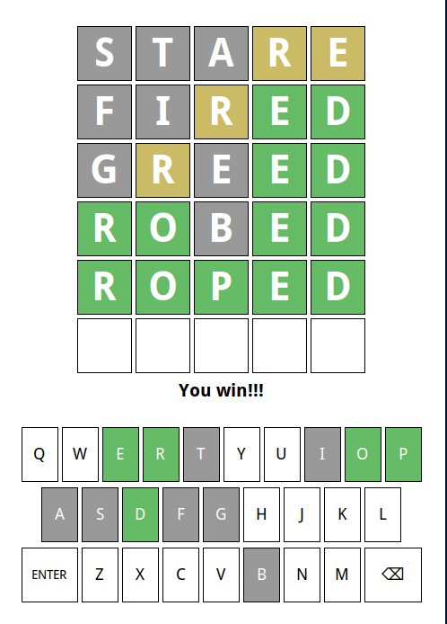

Formatting Wordle
Jed Rembold
February 9, 2026
Happy Friday!!!
- Scan the QR code or go to https://tools.jedrembold.prof/daily
- Introduce yourselves! Fun question: What is your favorite leading question in 20 questions?

Quick Announcements
- Problem Set 3 is due tonight
- I’m so sorry, I’m still getting through the PS2 feedback :/
- Project 1 is live!
- Due next Monday
- Sections this week will revolve around common tricky bits
Group Problems
Problem 1: More Console Boxes
- Here you want to extend the console box problem from last week’s section
- You will prompt a user to enter in a width, and then again to enter a height, then use those to create your box
- Then you should still print the resulting box to the screen (in fact, you could still use your old function)
- Too easy? Make it so that if they don’t enter an integer, it keeps prompting them until they do.
Problem 1 Example Output
Please enter a width: 5
Please enter a height: 3
+---+
| |
+---+Problem 2: The Right Format
Which of the provided formatted string options below would evaluate to appear as:
101,234.98 & 4000
when printed?
f"{101234.984:<12,.2f} & {3200//8:<4d}"f"{101234.984:>12,.2f} & {32000//8:0>3d}"f"{101234.984:<12,f} & {320//8:0>4d}"f"{101234.984:<12,.2f} & {32//8:0<4d}"
Problem 3: Tabulated Birthdays
- You want a program that prompts a user for 3 pieces of information:
- Name
- Birth month name
- Birth year
- It should do this for each member of your group
- It should then print off a table with:
- Columns of Name, Birth month, and Age (approximate)
- Each members information below, nicely aligned
Problem 3 Example Output
Enter your name: Jed
Enter your birth month: April
Enter your birth year: 1985
Enter your name: Rick
Enter your birth month: June
Enter your birth year: 1952
Name Birth Month Age
Jed April 41
Rick June 74Project 1: Wordle
Introduction to Wordle
- Our first project is recreating Wordle
- Guide is posted now and available!
- Due next Monday (Feb 16)
- Section questions will relate to common Wordle issues this week
- Aiming to be done with Milestone 3 by end-of-day Friday would be a good target

Your Responsibilities
- We provide you with a custom data type that handles all the graphics
and user interaction
- Don’t worry, you’ll have a chance to implement your own GUIs later in the semester!
- Your responsibilities will include:
- Displaying and reading letters from boxes
- Evaluating whether a word is valid
- Determining what color each letter of a word should be
- Selecting a secret five letter word for guessing
- Determining when victory or defeat occurs
- Coloring the keys according to the guesses so far
Interacting with the Window
- The
WordleGWindowobject contains its own information about what is happening in the window at any given point - You must interact with it to:
- Get information you need
- Update information in the window
- A general algorithm/pattern that will be frequently used is to:
- Get some information from the window
- Use that information in your program to make a decision about something
- Update the new information back to the window
Your Toolbox
- Utilize the special functions/methods provided by the graphics data
type:
WordleGWindow- These are documented in the guide, and include, but are not limited
to, things like
- Getting or setting a letter in a particular box
- Getting or changing the color of a given box
- Changing which row is used when characters are typed in
- These are documented in the guide, and include, but are not limited
to, things like
- Variables and functions
- Control statements
- Good use of loops and if statements will be very useful
- String functions and operations
An Approach to Success
- Each project is accompanied by a highly detailed guide: read
it!
- Explains background ideas so that you can understand the big picture of what you are needing to do
- Also included a breakdown of individual milestones
- A milestone is a discrete checkpoint that you should ensure is working (and that you understand!) before moving on
- Whenever you complete a milestone, you should upload your current code to GitHub.
- Projects are all about managing complexity. If you start trying to implement milestones out of order, you are asking for disaster
- Don’t let yourself get overwhelmed by scale. Focus on one particular milestone at a time, which should involve focusing only on a small part of your overall code
A Few Other Hints
- Despite there being multiple files in the starting repository, you
only need to edit one yourself:
wordle.py - You will have an easier time here if you define all your helper
functions inside the main
wordlefunction that is defined in the starting template - TEST TEST TEST!
- Beyond just not doing something that the guide requests, the most common reason student’s lose points is because they didn’t test their code well
- If you want the possibility of a 100%, then you need to do at least one extension. But do not start any extensions until you are confident you have achieved everything the guide required, and have TESTED IT